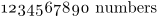

Syntax (autogenerated)
Syntax
| {\os ...} | |
| ... | text, usually only numbers |
Description
A switch: start using the old style variant of the current font. Used to obtain old-style numerals.
Example
-
{\os 1234567890 numbers}
- 
See also
- \frak and \goth for Fraktur and Gothic font variants, including gothic-style numerals.
- \mediaeval for the command equivalent of this switch.
Help from ConTeXt-Mailinglist/Forum
All issues with: